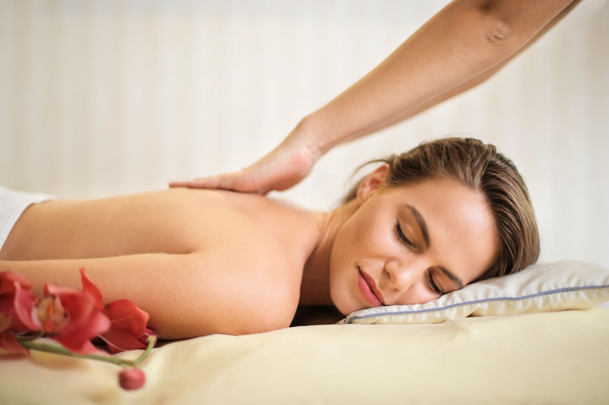

Przewlekły ból dolnej części pleców, czyli w rejonie lędźwiowo-krzyżowym, to powszechna dolegliwość, która dotyka miliony ludzi na całym świecie. Może znacząco obniżyć komfort życia – ogranicza swobodę ruchu, odbiera energię i utrudnia wykonywanie codziennych czynności. Nic więc dziwnego, że coraz więcej osób sięga po terapeutyczne masaże jako formę ulgi. Nie chodzi tu wyłącznie o chwilowe odprężenie – celem jest realna poprawa jakości życia, a to wartość nie do przecenienia.
Co mówi nauka? Coraz więcej badań potwierdza, że masaż może skutecznie zmniejszać przewlekły ból pleców. Jak to możliwe? Dzięki odpowiednio dobranym technikom, takim jak:
- Masaż tkanek głębokich – pozwala dotrzeć do głębszych warstw mięśni i powięzi, redukując chroniczne napięcia.
- Praca z punktami spustowymi – pomaga zlokalizować i rozluźnić miejsca wywołujące ból promieniujący.
- Poprawa krążenia – masaż stymuluje przepływ krwi, co wspomaga regenerację tkanek.
- Zwiększenie elastyczności – regularne zabiegi poprawiają zakres ruchu i zmniejszają sztywność mięśni.
Przykład? W badaniu opublikowanym w czasopiśmie „Pain Medicine” wykazano, że regularne masaże przez osiem tygodni znacząco obniżyły poziom bólu u pacjentów z przewlekłymi dolegliwościami lędźwiowymi. To konkretne potwierdzenie skuteczności tej metody.
Warto jednak pamiętać, że skuteczność masażu zależy od indywidualnego dopasowania terapii. Każdy organizm reaguje inaczej, dlatego kluczowe jest dobranie odpowiednich technik do potrzeb konkretnej osoby. Masaż działa najlepiej jako element kompleksowego planu leczenia, który może obejmować również:
- ćwiczenia wzmacniające i rozciągające,
- terapię manualną,
- fizjoterapię,
- zmiany stylu życia i ergonomii pracy.
Połączenie tych metod zwiększa szansę na trwałą poprawę stanu zdrowia i redukcję bólu.
A Ty? Masz już doświadczenia z masażem w leczeniu bólu pleców? Uważasz, że powinien być stałym elementem terapii przy bólach lędźwiowo-krzyżowych? Podziel się swoją opinią – jesteśmy ciekawi Twojej historii!
Charakterystyka przewlekłego bólu kręgosłupa lędźwiowo-krzyżowego
Przewlekły ból kręgosłupa lędźwiowego to coraz powszechniejszy problem zdrowotny, który znacząco obniża jakość życia. Ogranicza swobodę ruchu, utrudnia codzienne funkcjonowanie, a w skrajnych przypadkach może prowadzić do całkowitego unieruchomienia. Najczęściej lokalizuje się w odcinku lędźwiowym, a jego przyczyny są zróżnicowane – od przeciążeń i urazów, przez wady postawy, aż po zmiany zwyrodnieniowe i choroby o charakterze degeneracyjnym. Istotnym czynnikiem ryzyka jest również siedzący tryb życia, związany z wielogodzinną pracą przy biurku lub prowadzeniem pojazdów.
Aby skutecznie przeciwdziałać przewlekłemu bólowi kręgosłupa, należy go najpierw dobrze zrozumieć. To nie tylko dolegliwość fizyczna – to także obciążenie psychiczne. Długotrwały ból może prowadzić do frustracji, obniżonego nastroju, a nawet depresji. Dlatego leczenie powinno być kompleksowe. Połączenie fizjoterapii z opieką psychologiczną daje największe szanse na poprawę jakości życia. Holistyczne podejście, uwzględniające zarówno ciało, jak i psychikę, przynosi najlepsze efekty terapeutyczne.
Najczęstsze przyczyny dolegliwości bólowych
Wśród najczęstszych przyczyn bólu kręgosłupa lędźwiowego wyróżnia się kilka schorzeń, które znacząco wpływają na codzienne funkcjonowanie:
- Dyskopatia lędźwiowa – uszkodzenie krążka międzykręgowego prowadzące do ucisku na nerwy. Objawia się silnym bólem, który może promieniować do kończyn dolnych i ograniczać ruchomość.
- Rwa kulszowa – ostry, przeszywający ból promieniujący wzdłuż nogi, spowodowany uciskiem na nerw kulszowy.
- Zmiany zwyrodnieniowe – postępujące wraz z wiekiem, powodujące przewlekły dyskomfort, sztywność i ograniczenie sprawności.
Zrozumienie mechanizmu powstawania bólu i jego źródła to pierwszy krok do trafnej diagnozy. Bez niej trudno mówić o skutecznym leczeniu.
Objawy i mechanizmy powstawania bólu
Objawy bólu kręgosłupa mogą mieć różnorodny charakter – od tępego, przewlekłego dyskomfortu po nagły, przeszywający ból, który może całkowicie sparaliżować ruch. Mechanizmy jego powstawania są złożone i obejmują:
- Podłoże mechaniczne – np. przemieszczenie krążka międzykręgowego, który uciska korzenie nerwowe.
- Podłoże neurologiczne – zaburzenia przewodzenia impulsów nerwowych.
- Nadmierne napięcie mięśniowe – często nasilające dolegliwości i utrudniające rozluźnienie.
Dlatego leczenie nie powinno ograniczać się wyłącznie do eliminacji źródła bólu. Równie istotne są:
- rozluźnienie napiętych mięśni,
- korekta postawy,
- wzmocnienie struktur stabilizujących kręgosłup.
Kompleksowe podejście terapeutyczne daje realną szansę na trwałą poprawę i powrót do normalnego życia.
Znaczenie stylu życia jako czynnika ryzyka
Styl życia ma kluczowe znaczenie dla zdrowia kręgosłupa lędźwiowo-krzyżowego. Do najczęstszych negatywnych czynników należą:
- długotrwałe siedzenie,
- brak aktywności fizycznej,
- przewlekły stres,
- nieprawidłowa ergonomia pracy.
Na szczęście nawet niewielkie zmiany mogą przynieść znaczną ulgę. Regularna aktywność fizyczna – np. codzienne spacery, lekkie ćwiczenia rozciągające czy joga – może znacząco poprawić kondycję kręgosłupa.
Warto zadać sobie pytanie: czy moje codzienne nawyki wspierają zdrowie kręgosłupa, czy mu szkodzą? Czasem wystarczy naprawdę niewiele:
- krótka przerwa od ekranu,
- korekta pozycji przy biurku,
- kilka minut ćwiczeń dziennie.
To właśnie te drobne, codzienne decyzje mają największy wpływ na zdrowie kręgosłupa w dłuższej perspektywie.
Znaczenie masażu w terapii bólu kręgosłupa
Gdy pojawia się ból pleców, masaż może przynieść nie tylko chwilową ulgę, ale również realne wsparcie dla całego organizmu. Choć techniki masażu znane są od wieków, ich skuteczność pozostaje niezmienna. Współczesna medycyna coraz częściej wykorzystuje masaż w leczeniu dolegliwości kręgosłupa, zwłaszcza w odcinku lędźwiowo-krzyżowym. Badania potwierdzają, że regularne zabiegi mogą znacząco zmniejszyć ból, dlatego masaż staje się istotnym elementem kompleksowej terapii.
Głównym celem masażu w terapii kręgosłupa jest redukcja bólu. Dzieje się to poprzez:
- rozluźnienie napiętych mięśni,
- poprawę krążenia krwi,
- zwiększenie elastyczności tkanek.
Efektem jest zmniejszenie dolegliwości bólowych i poprawa swobody ruchu. Choć masaż może działać samodzielnie, najlepsze rezultaty przynosi jako uzupełnienie fizjoterapii lub terapii manualnej – razem tworzą skuteczny duet terapeutyczny.
Nie bez znaczenia jest również wpływ masażu na naturalne procesy regeneracyjne. W przypadku przewlekłego bólu, który trwa tygodniami lub miesiącami, masaż staje się czymś więcej niż tylko chwilową ulgą – to realna pomoc w powrocie do sprawności. Dlatego coraz więcej specjalistów rekomenduje go jako element terapii bólu kręgosłupa.

Jak masaż wpływa na zmniejszenie dolegliwości bólowych
W przypadku bólu kręgosłupa, masaż działa wielowymiarowo. Szczególnie skuteczny jest, gdy przyczyną dolegliwości są napięte mięśnie i ograniczona ruchomość. Odpowiednio dobrane techniki pozwalają terapeucie:
- rozluźnić spięte partie mięśniowe,
- zwiększyć zakres ruchu,
- złagodzić ból.
To jednak dopiero początek korzyści. Masaż poprawia również krążenie krwi i limfy, co przyspiesza usuwanie toksyn i zmniejsza stany zapalne. Dodatkowo stymuluje wydzielanie endorfin – naturalnych substancji przeciwbólowych, które poprawiają nastrój i łagodzą ból bez konieczności stosowania leków.
Nie można pominąć wpływu masażu na elastyczność mięśni i stawów, co ma ogromne znaczenie przy sztywności i ograniczeniach ruchowych. Co więcej, masaż działa również na psychikę – redukuje stres, poprawia jakość snu i wspiera proces zdrowienia. To kompleksowe działanie sprawia, że masaż jest skutecznym narzędziem w walce z bólem pleców.
Efekty masażu w leczeniu przewlekłego bólu
W przypadku przewlekłego bólu kręgosłupa, masaż może przynieść przełomowe efekty. Działa zarówno na ciało, jak i na psychikę, oferując:
- rozluźnienie napiętych mięśni,
- poprawę mikrokrążenia i dotlenienia tkanek,
- przyspieszenie regeneracji,
- zmniejszenie potrzeby stosowania leków przeciwbólowych.
Dzięki poprawie elastyczności tkanek, codzienne czynności – takie jak schylanie się, wstawanie z łóżka czy noszenie zakupów – stają się łatwiejsze. To realna poprawa jakości życia, odczuwalna każdego dnia.
Nie można też zapominać o wpływie masażu na samopoczucie psychiczne. Przewlekły ból często prowadzi do obniżonego nastroju, a nawet depresji. Masaż, redukując napięcie i poprawiając komfort psychiczny, działa jak naturalna forma terapii. Dlatego warto włączyć go do długoterminowego planu leczenia bólu kręgosłupa.
Wskazania i przeciwwskazania do masażu leczniczego
Zanim zdecydujesz się na terapeutyczny masaż, warto poznać sytuacje, w których jest on zalecany, oraz te, w których należy go unikać.
Wskazania do masażu leczniczego:
- przewlekłe napięcia mięśniowe,
- bóle pourazowe,
- ograniczenia ruchomości wynikające z przeciążenia kręgosłupa,
- rehabilitacja po urazach i operacjach ortopedycznych.
W takich przypadkach masaż może znacząco poprawić komfort życia i przyspieszyć powrót do sprawności.
Przeciwwskazania do masażu:
- ostre stany zapalne,
- choroby nowotworowe,
- zaawansowana osteoporoza,
- infekcje skórne i otwarte rany.
W powyższych sytuacjach masaż może być niebezpieczny i przynieść więcej szkody niż pożytku. Dlatego zawsze warto skonsultować się z lekarzem lub doświadczonym fizjoterapeutą przed rozpoczęciem terapii.
Indywidualne podejście to klucz do skuteczności masażu. Zabieg powinien być dostosowany do:
- Twojego stanu zdrowia,
- poziomu bólu,
- ogólnej kondycji fizycznej,
- stylu życia i poziomu aktywności,
- ewentualnych chorób towarzyszących.
O tym, co jeszcze warto wiedzieć przed rozpoczęciem terapii, opowiemy w kolejnych częściach.
Rodzaje masażu stosowane w leczeniu bólu lędźwiowo-krzyżowego
W leczeniu bólu lędźwiowo-krzyżowego kluczowe znaczenie ma dobór odpowiedniej techniki masażu. Na szczęście dostępnych metod jest wiele, a ich elastyczność pozwala dostosować terapię do indywidualnych potrzeb pacjenta. Dzięki temu masaż nie tylko łagodzi dolegliwości bólowe, ale również wspiera regenerację tkanek i poprawia ogólną sprawność układu ruchu. To skuteczne i kompleksowe wsparcie w terapii bólu pleców.
Masaż klasyczny – działanie i zastosowanie
Masaż klasyczny to podstawowa i najczęściej stosowana forma terapii manualnej. Wykorzystuje techniki takie jak:
- głaskanie – działa uspokajająco i przygotowuje tkanki do dalszej pracy,
- ugniatanie – rozluźnia napięte mięśnie i poprawia ich ukrwienie,
- rozcieranie – wspomaga usuwanie produktów przemiany materii i zmniejsza ból.
Regularne zabiegi poprawiają krążenie, zwiększają elastyczność tkanek oraz wspierają korekcję postawy. Pacjenci często zauważają poprawę w testach funkcjonalnych, takich jak test Schobera czy test „palce-podłoga”, co świadczy o zwiększonej ruchomości kręgosłupa.
Masaż tkanek głębokich – skuteczność w terapii punktów spustowych
Masaż tkanek głębokich to intensywna technika, która działa na głębsze warstwy mięśni i powięzi. Szczególnie skuteczna jest w terapii punktów spustowych – bolesnych miejsc w mięśniach, które mogą promieniować ból do innych obszarów ciała.
Główne korzyści tej metody to:
- rozluźnienie chronicznych napięć mięśniowych,
- poprawa elastyczności tkanek,
- przywrócenie prawidłowego funkcjonowania mięśni,
- zmniejszenie bólu w dolnym odcinku pleców.
Technika ta wykorzystuje precyzyjny ucisk i powolne, kontrolowane ruchy, co czyni ją skuteczną nawet w przypadkach przewlekłych dolegliwości. Dla wielu pacjentów to ostatnia, ale skuteczna forma terapii.
Masaż powięziowy – wpływ na napięcia tkanki łącznej
Masaż powięziowy koncentruje się na pracy z powięzią – elastyczną tkanką łączną otaczającą mięśnie i narządy. Gdy powięź ulega napięciu lub zrostom, może ograniczać ruchomość i powodować ból, mimo braku zmian w badaniach obrazowych.
Korzyści masażu powięziowego obejmują:
- rozluźnienie zrostów i przykurczów,
- przywrócenie naturalnej elastyczności tkanek,
- zwiększenie zakresu ruchu,
- zmniejszenie uczucia sztywności i dyskomfortu.
To idealna metoda dla osób, które odczuwają dolegliwości mimo braku uchwytnych zmian w strukturze kręgosłupa. Często to właśnie powięź jest źródłem problemu.
Masaż segmentarny – praca na strefach unerwienia
Masaż segmentarny opiera się na neurologicznej zależności między segmentami kręgosłupa a określonymi obszarami ciała. Poprzez stymulację odpowiednich stref, masaż wpływa nie tylko na mięśnie, ale również na:
- narządy wewnętrzne,
- układ nerwowy,
- funkcje autonomiczne organizmu,
- regulację napięcia mięśniowego.
W przypadku bólu lędźwiowo-krzyżowego masaż segmentarny może być szczególnie pomocny, gdy przyczyną są zaburzenia neurologiczne. Często stosowany jako uzupełnienie innych metod terapeutycznych, zwłaszcza gdy standardowe podejścia zawodzą.
Masaż wibracyjny – zastosowanie drgań w redukcji bólu
Masaż wibracyjny wykorzystuje mechaniczne drgania do stymulacji mięśni i układu nerwowego. To nowoczesna technika, która przynosi wymierne efekty w terapii bólu dolnego odcinka kręgosłupa.
Najważniejsze efekty masażu wibracyjnego to:
- rozluźnienie napiętych struktur mięśniowych,
- poprawa propriocepcji – zdolności ciała do wyczuwania położenia i ruchu,
- zmniejszenie podrażnienia korzeni nerwowych,
- poprawa wyników testu Lasegue’a.
Technika ta jest szczególnie polecana osobom z rwą kulszową lub zespołem korzeniowym. Choć brzmi technicznie, jej skuteczność jest potwierdzona klinicznie.
Masaż leczniczy – ukierunkowanie na konkretne schorzenia
Masaż leczniczy to indywidualnie dopasowana forma terapii, skoncentrowana na konkretnych problemach zdrowotnych, takich jak:
- dyskopatia,
- rwa kulszowa,
- przeciążenia mięśniowe,
- przewlekłe zespoły bólowe kręgosłupa.
W odróżnieniu od masażu relaksacyjnego, masaż leczniczy skupia się na precyzyjnej pracy w miejscu występowania bólu, poszukując jego źródła. Dzięki temu możliwe jest:
- złagodzenie objawów,
- przyspieszenie regeneracji,
- poprawa funkcji ruchowych,
- zwiększenie komfortu życia.
Regularne zabiegi, połączone z innymi formami rehabilitacji, mogą znacząco poprawić jakość życia pacjentów z przewlekłymi dolegliwościami kręgosłupa. To nie tylko teoria – to potwierdzona praktyka.
Techniki masażu stosowane w terapii dolnego odcinka kręgosłupa
Gdy pojawia się ból w dolnej części pleców, odpowiednio dobrany masaż może przynieść nie tylko chwilową ulgę, ale również realne wsparcie w terapii. Techniki masażu pomagają rozluźnić spięte mięśnie, zmniejszyć napięcie i poprawić ogólne samopoczucie. Kluczowe jest indywidualne podejście do pacjenta – to ono decyduje o skuteczności terapii i pozwala dopasować metodę do konkretnego problemu.
W terapii dolnego odcinka kręgosłupa stosuje się różne techniki, z których każda pełni określoną funkcję:
- Głaskanie – delikatne, rytmiczne ruchy, które wprowadzają ciało w stan relaksu i przygotowują je do dalszej pracy terapeutycznej.
- Ugniatanie – głębsze ruchy, które rozluźniają napięte struktury mięśniowe i poprawiają elastyczność tkanek.
- Rozcieranie – technika wspomagająca rozluźnienie mięśni i poprawę mikrokrążenia.
- Wibracja – subtelne drgania, które stymulują krążenie krwi i limfy, wspierając naturalne procesy regeneracyjne organizmu.
Dobór techniki zależy od rodzaju dolegliwości, dlatego tak ważne jest, by masaż wykonywał doświadczony specjalista. Tylko on potrafi trafnie ocenić sytuację i dobrać odpowiedni zabieg, który przyniesie realną poprawę. Nie każdy ból pleców ma to samo podłoże, dlatego indywidualizacja terapii jest kluczowa.
Masaż kręgosłupa lędźwiowego – lokalizacja i przebieg zabiegu
Masaż kręgosłupa lędźwiowego to precyzyjna forma terapii manualnej, skoncentrowana na dolnym odcinku pleców. Jest szczególnie skuteczna w przypadku:
- przewlekłego bólu pleców,
- napięcia mięśniowego,
- przeciążeń wynikających z siedzącego trybu życia,
- ograniczonej ruchomości w odcinku lędźwiowym.
Podczas zabiegu terapeuta stosuje różne techniki – od głaskania, przez ugniatanie, aż po rozcieranie – koncentrując się na odcinku lędźwiowym. Każda technika ma określone zadanie: rozluźnić mięśnie, poprawić mikrokrążenie i przywrócić prawidłowe napięcie tkanek.
Skuteczność masażu lędźwiowego została potwierdzona w licznych badaniach klinicznych. To nie tylko teoria – to działa. Co więcej, masaż ten nie ogranicza się jedynie do łagodzenia bólu. Wspiera regenerację organizmu, co czyni go istotnym elementem kompleksowej terapii, zwłaszcza u osób z przewlekłymi dolegliwościami.
Metody terapii


Rekomendacje
Co mówią o nas pacjenci